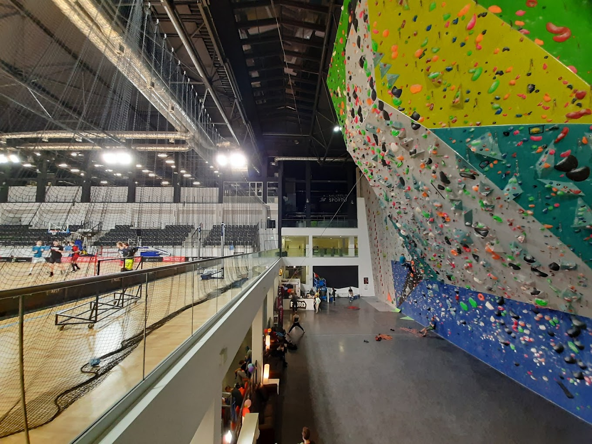
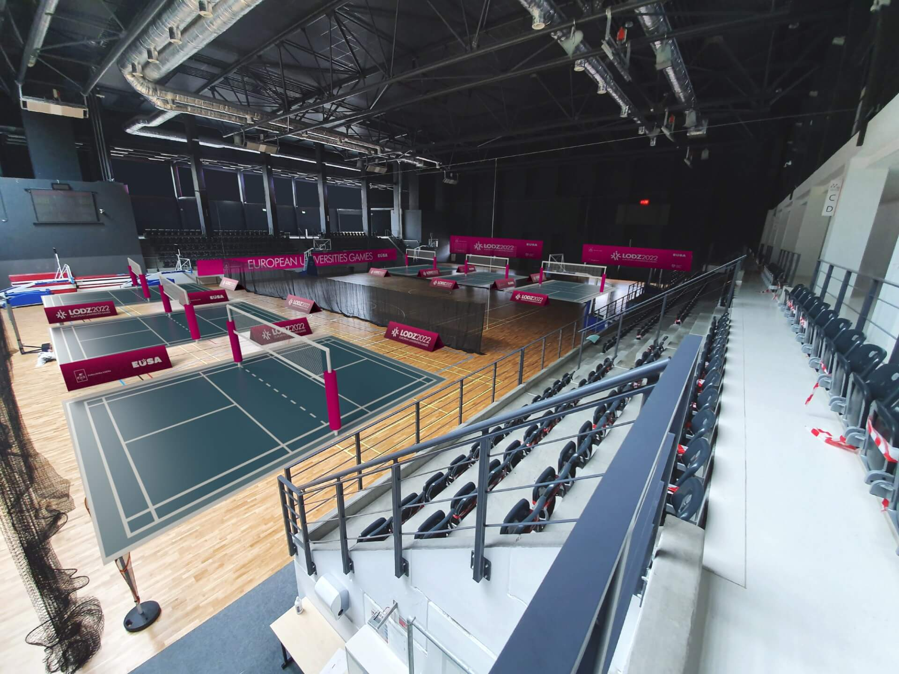
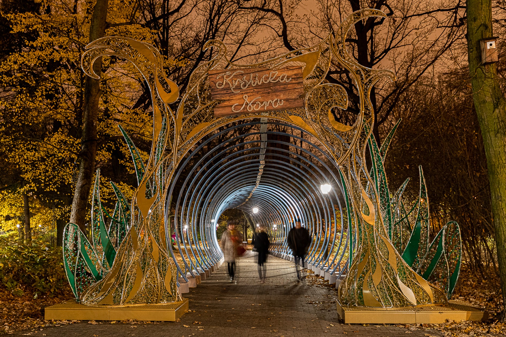

City
The Ultimate Guide to Zatoka Sportu Politechniki Łódzkiej: Facilities, Programs, and More
Sports and physical activity are essential for maintaining a healthy lifestyle and overall well-being.
For students and faculty at Politechniki Łódzkiej, there is no better place to engage in physical activity than Zatoka Sportu Politechniki Łódzkiej.
Located on the university campus, Zatoka Sportu is a modern and comprehensive sports complex that provides top-notch facilities and programs for everyone.

Parkna Zdrowiu
The facilities at Zatoka Sportu are impressive and cater to a wide range of sports and activities. The complex boasts two indoor swimming pools, one outdoor pool, and a diving pool. For those interested in fitness, the fitness rooms feature modern equipment and offer a variety of classes, such as yoga and Pilates. There are also basketball and volleyball courts, football pitches, and an indoor track for running and other activities. In addition, there is a wellness area that includes saunas and massage rooms for relaxation and recovery.

Park Starsi
One of the standout features of Zatoka Sportu is its focus on providing opportunities for all students and faculty members. The complex offers sports programs and activities for people of all skill levels, from beginners to advanced athletes. For example, there are swimming lessons for beginners and advanced swimmers, as well as programs focused on developing swimming techniques for triathlon athletes. Additionally, the complex offers a wide range of team sports, such as basketball, volleyball, and football, which are open to all students and faculty members who wish to participate.

Park Zrodliska
Zatoka Sportu is not just for university students and faculty members, however. It is open to the wider community of Łódź, providing an accessible and inclusive space for people of all ages and backgrounds to engage in physical activity. The complex offers various memberships and passes, allowing people to choose the programs and facilities that best suit their needs and schedules.
Beyond its facilities and programs, Zatoka Sportu is also notable for its commitment to sustainability and the environment. The complex features solar panels that provide a significant portion of its energy needs, and it is built with eco-friendly materials and technology that minimize its environmental impact. Zatoka Sportu is a model for sustainable sports complexes and a testament to the importance of environmental stewardship in all areas of life.
In conclusion, Zatoka Sportu Politechniki Łódzkiej is an exceptional sports complex that provides state-of-the-art facilities and programs for everyone. Whether you are a student, faculty member, or member of the wider community, Zatoka Sportu offers a welcoming and inclusive space for physical activity, wellness, and community engagement. With its focus on sustainability and accessibility, Zatoka Sportu is a model for sports complexes and a valuable resource for anyone seeking to lead a healthy and active lifestyle.
Sources: